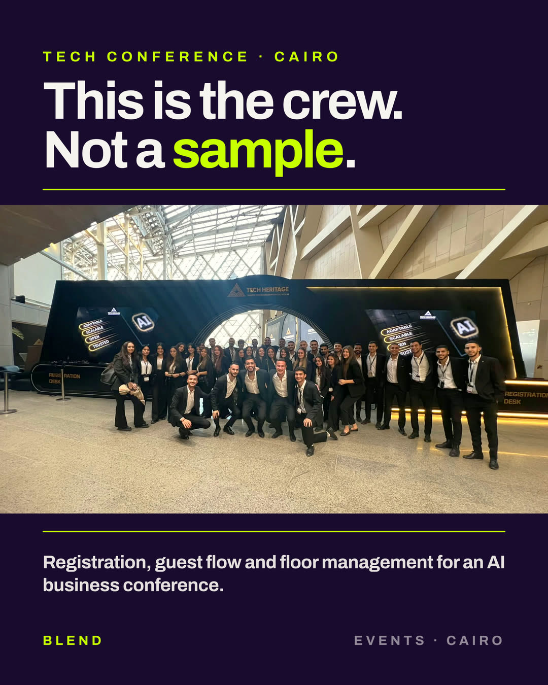
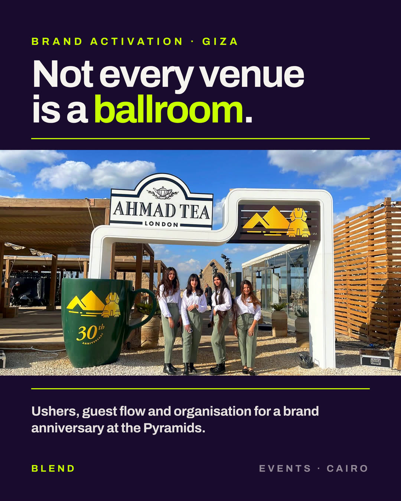
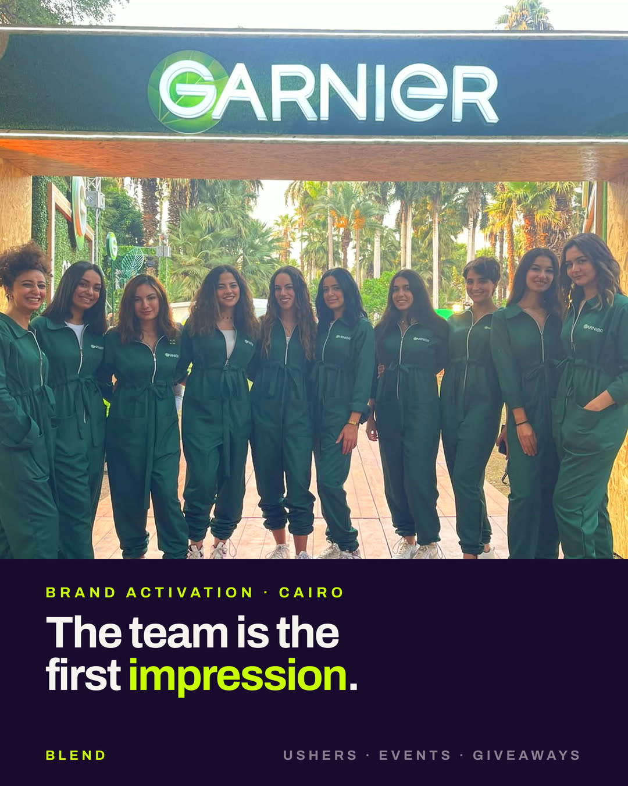
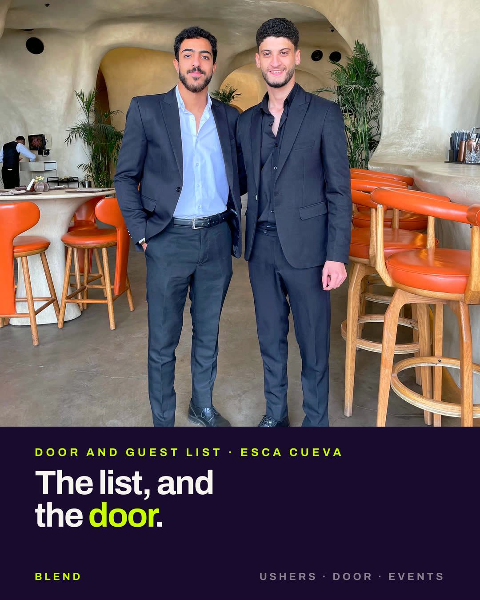
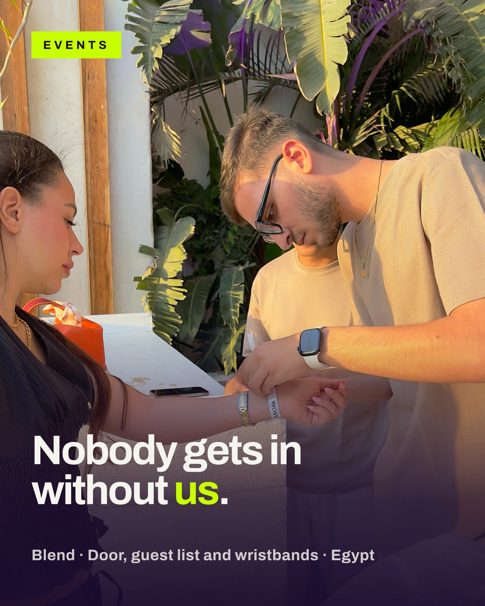
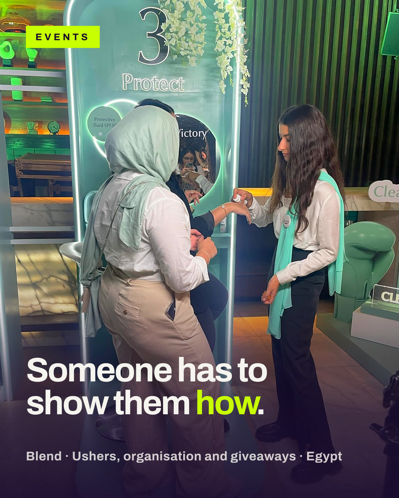
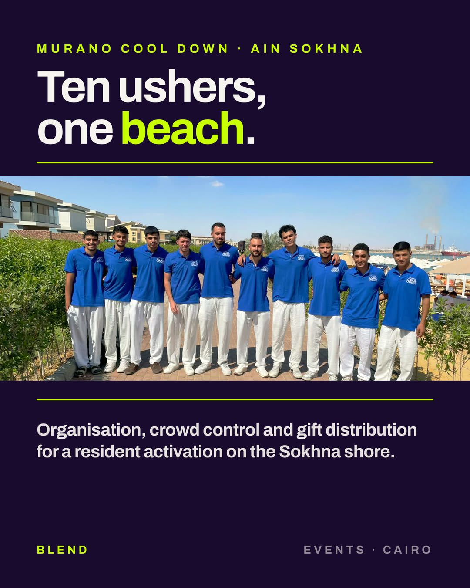
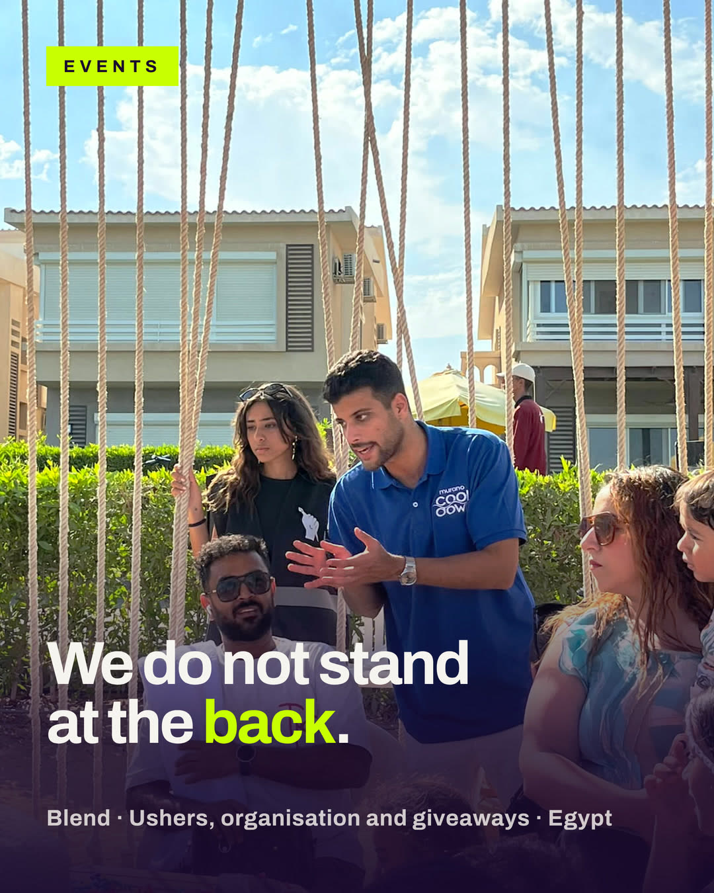
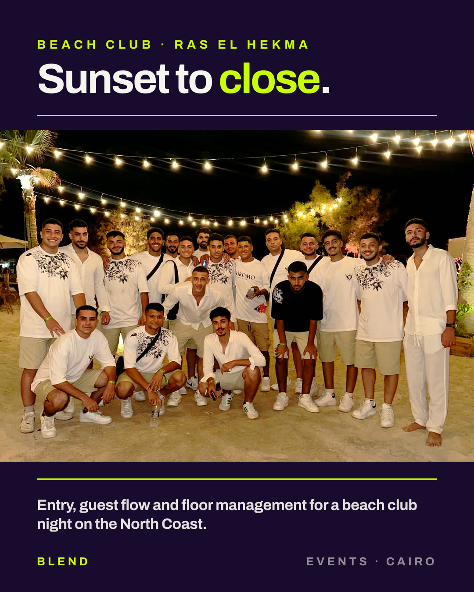

Blend · Cairo
We put the content, the merch and the people on your campaign.
UGC video / Branded giveaways / Ushers & events
Who we are
Blend started in events, putting briefed teams on the floor for activations and launches across Egypt. We have built outward from there, so one team now handles the content, the merch and the people at the same activation.
Founded and run by Moustafa Shawkat, in Cairo.
200+
Events delivered
6
Years in the field
2,000
Creators on the roster
1
Brief, three deliverables
Service one
Content that looks like a recommendation instead of an ad. Filmed by real people, in the rooms they actually live in.
Mintra · footwear · 2026
Comfortable, affordable shoes for everyday wear. The buyer weighs price and whether they are worth the money. The video had to run as a paid ad.
It opened on the discount and did not reach the product until second 19. Nobody watches an offer for nineteen seconds.
Cut to 22 seconds. Shots grouped by camera distance so every hard cut lands between two shots of similar size. Product first, offer last.
Her room, her phone, her words. The unpolished look is a decision about the footage, not a limit of the budget.
Creator video · apparel · Cairo
No set, no crew, no lighting kit. She opens on the thing itself rather than on an introduction, shows it the way she would show a friend, and the whole piece runs fourteen seconds.
By studio rules the room is lit wrong. That is also the reason somebody believes a real person owns the product.
Two units, because creators spill things and film the same scene four times.
The hook, the thing to show, the one reason to buy. The words stay theirs, which is the part that makes somebody watch.
Mothers, fathers, students, whole families. If a product lives in a house, somebody needs it filmed there.
Organic use on your page and the creator's is included. Paid advertising is licensed separately and that fee goes to the creator.
Being straight about this one. The brands on the previous page hired us for staffing, events and giveaways. They are not UGC clients, and we are not going to let a logo imply otherwise.
So the first video is on us. You judge the quality before you commit to anything, and if it isn't for you, the video is still yours to keep.
Service two
This is the part of Blend with six years behind it. Briefed crews, in uniform, who know the floor plan before the doors open.









Every photograph here is from a Blend event. No stock photography in this document.
Vetted before they join the roster, and briefed on your brand before they arrive rather than on the morning.
Across the team, not an upgrade you pay extra to unlock.
From four people on a stand to forty-five across a conference floor.
Getting a product into somebody's hand so they actually try it, a hundred times an hour, without the queue stopping.
Some briefs need the product demonstrated one person at a time. That is a different crew and we say so before you book.
Cairo, the North Coast, and anywhere in Egypt the campaign travels.
Our own footage, from our own events
Staffing, events and giveaways work
Service three
Merch people keep instead of leaving on the chair. Sourced manufacturer-direct, from fifty units to five thousand.
Bags, drinkware, apparel, caps and full branded kits, priced from the factory rather than through a reseller.
Fifty units for a press day or five thousand for a national activation.
Same brief, same team. The merch is on the floor when the people are, which is the thing that usually goes wrong.
How it works
Three vendors means three contracts, three timelines and three people to chase. This is one of each.
One conversation. We map what the campaign actually needs, and say so if it does not need all three.
Creators booked, merch sourced, crew scheduled. Running in parallel rather than one after the other.
Video in 3 to 5 days. Merch to your door. Crew on the floor, briefed and in uniform before the doors open.